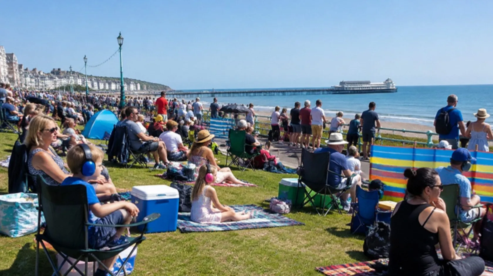

Check your last bus or train home before you set off. Roads near the show can close on the day, so stops may move. I would take a screenshot of the times, as phone signal can be poor in big crowds.

Pick your show and where you’re starting from. I’ll show you every way in, where to get off, the times and the walk to the gate. Then add the ones you like to your plan for the day.
Pick where you’re heading. Ways in is how many train, bus, coach and Park and Ride options I have mapped.
Quick answers before you travel